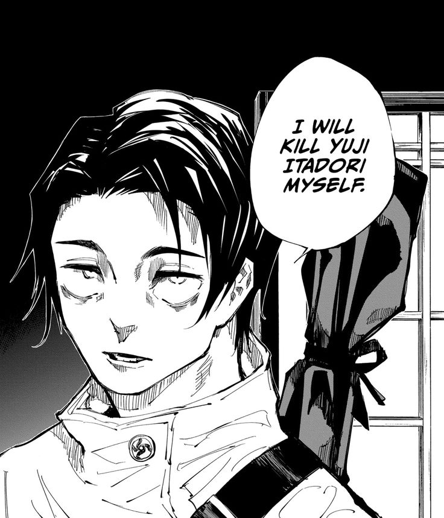
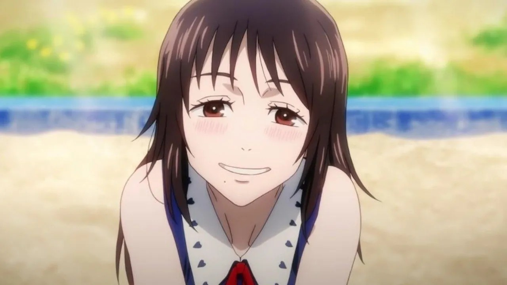
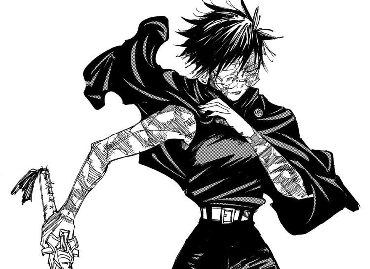
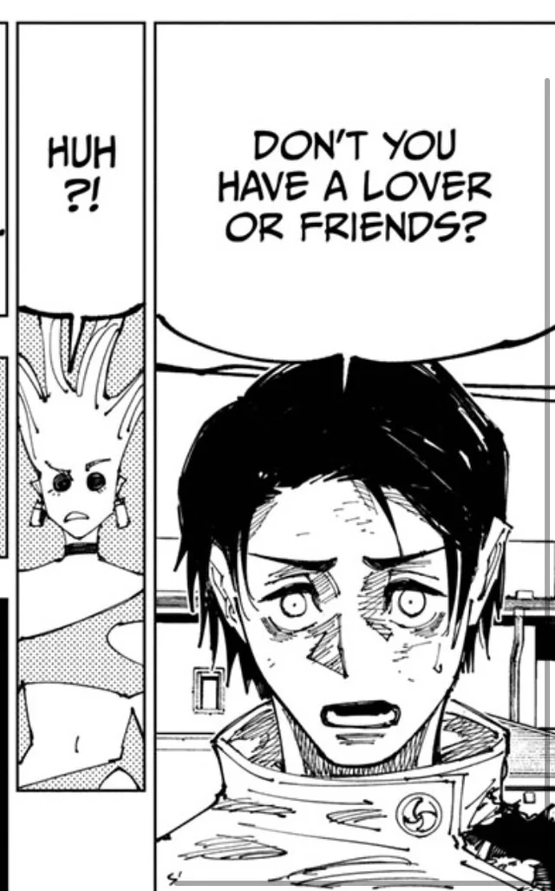

MUITO MELHOR DO QUE ESSE LIXO ITADORI YUJI!!!!
Apenas o melhor feiticeiro Jujutsu 🔥
Algúem me conta, por favor, quantos interesses românticos o Itadori tem? Zero? Que pena, a história inteira do Yuta é sobre amor e casamento. Que "protagonista" é esse que não tem nenhum romance?  
O Yuta tendo 2 namoradas enquanto o Yuji "protagonista" tem ZERO é hilário
Enfim, ele VAI voltar no próximo capítulo, ele VAI copiar o Infinito e os Seis Olhos, ele VAI matar o Sukuna e vai casar com a Maki no final.
O Yuta é muito legal 😁